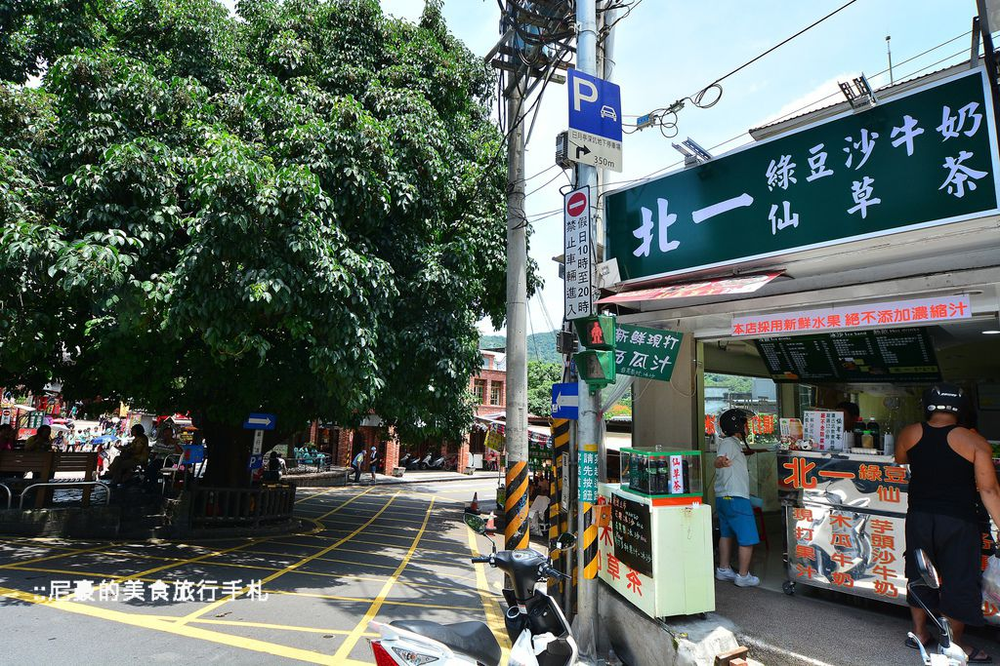
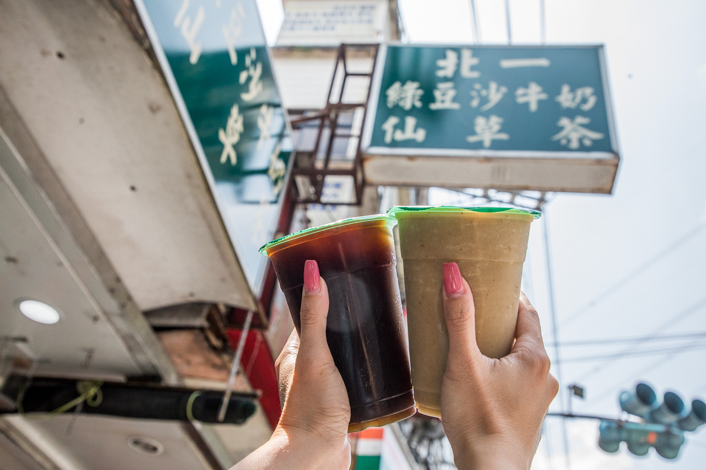

北一綠豆沙
google評價：4.1★
店家資訊
地址：新北市深坑區北深路二段179-1號
營業時間：早上11:00到晚上7:30
店家電話：02-2662-2638

推薦菜單
綠豆沙牛奶45元 芋頭沙牛奶50元
木瓜牛奶50元 香蕉牛奶50元 檸檬汁40元
百香果冰沙45元 檸檬冰沙45元 多多冰沙45元
仙草茶50元/100元 西瓜汁35元 桂圓茶35元
顧客評論
這家綠豆沙標榜純天然，飲料真材真材實料，絕對不用濃縮果汁，連仙草茶都熬煮12小時以上。他的綠豆沙非常不甜，夏天喝會很解渴的那種，整杯鮮奶加上大量綠豆，綠豆很綿密，喝起來很像打碎的綠豆湯，可以喝到綠豆本身的味道，也不會甜膩，非常耐喝。而仙草茶喝起來非常純，入口是很濃郁的仙草香氣，也不會很甜。